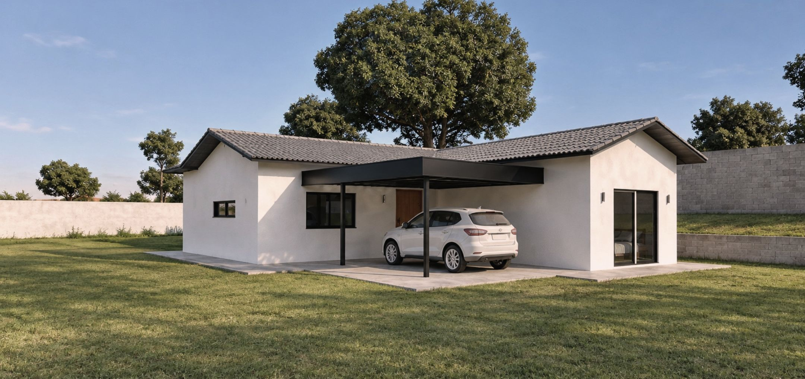
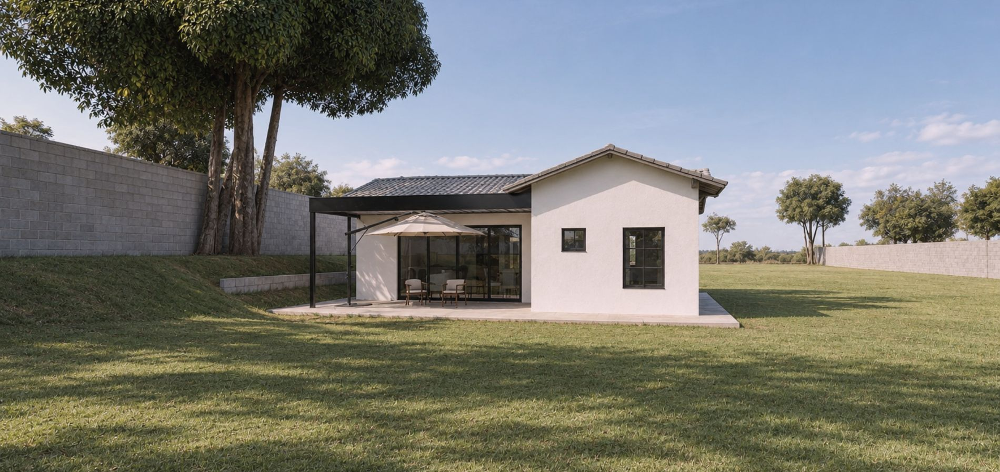
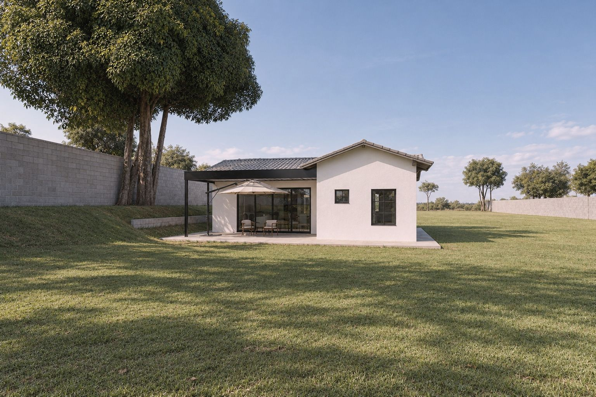
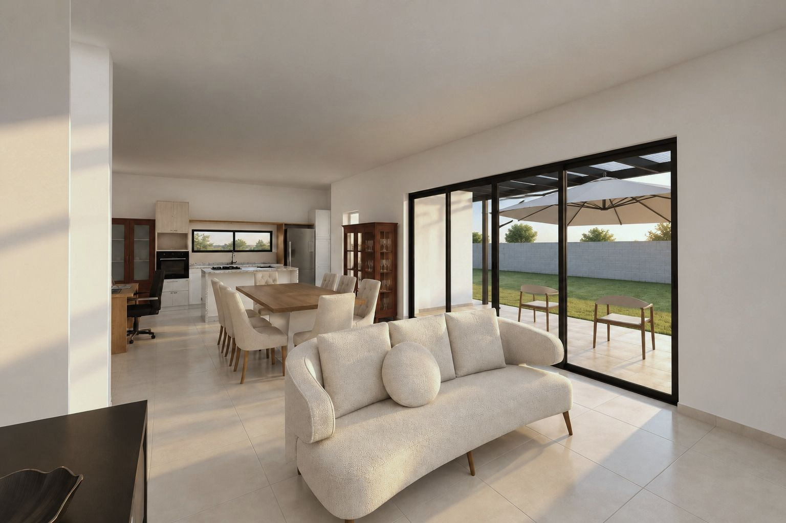
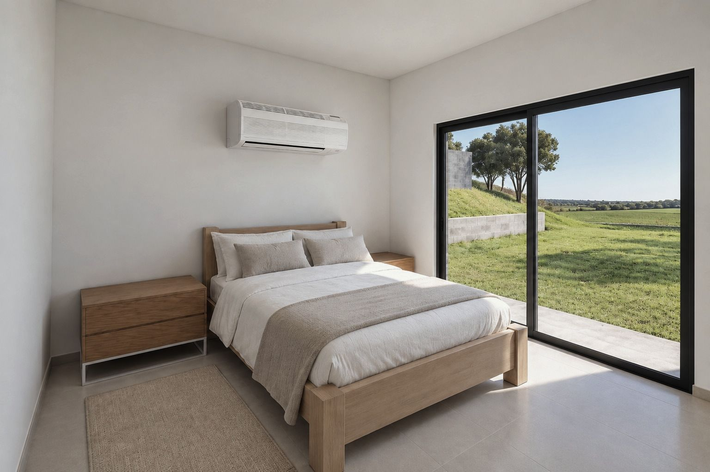
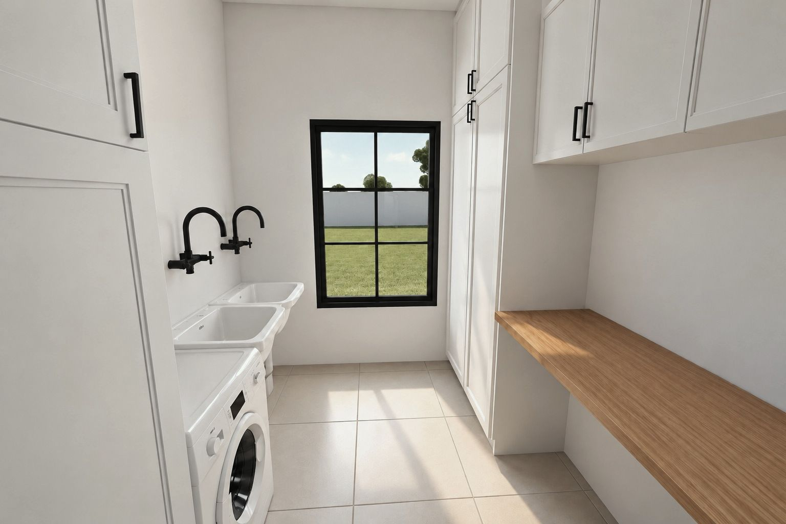
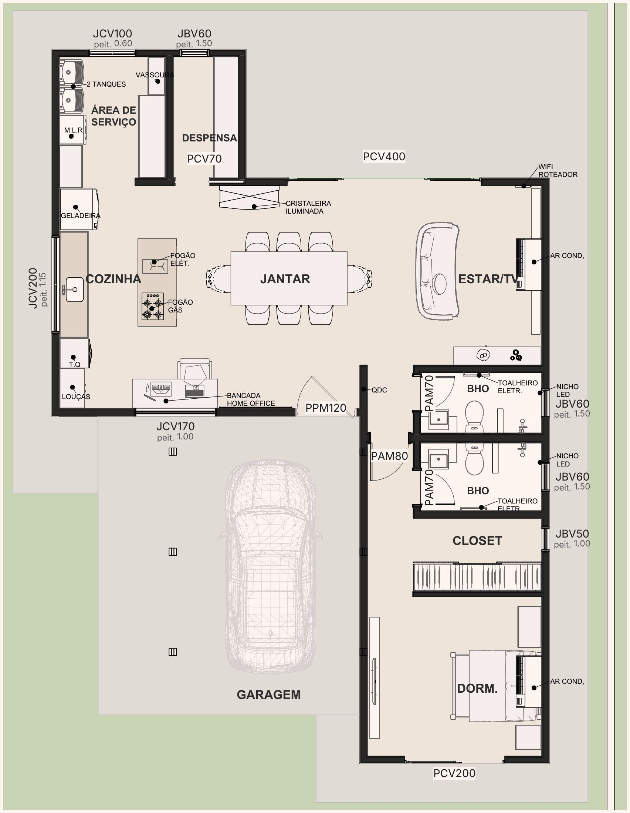
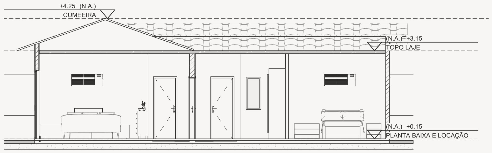

obras / chalés
Chalé Viver

Casa térrea em L no platô do fundo do lote, 3 m acima do portão.
Uma rampa de concreto sobe até a garagem, coberta por um pergolado metálico preto com acrílico. A casa foi posicionada a 1,20 m da mureta que protege a mangueira existente.
Estar, jantar e cozinha em 43,66 m², suíte com closet e área de serviço. A cobertura é em telha de concreto cinza, em três corpos de duas águas.
Aqui o sistema é o convencional: estacas escavadas, blocos, pilares, vigas e laje treliçada.
- Local
- Marília · SP
- Área construída
- 87,88 m²
- Projeção
- 10,25 × 15,45 m
- Sistema
- Alvenaria com estrutura de concreto armado
- Fundação
- Estacas escavadas de 32 cm e blocos
- Laje
- Treliçada, h = 16 cm, concreto C25
- Cobertura
- Telha de concreto, inclinação de 35%
- Escopo
- Arquitetura, estrutural, complementares e projeto legal
- Etapa
- Projeto · 2026
Fachadas





Interiores






Planta e corte



